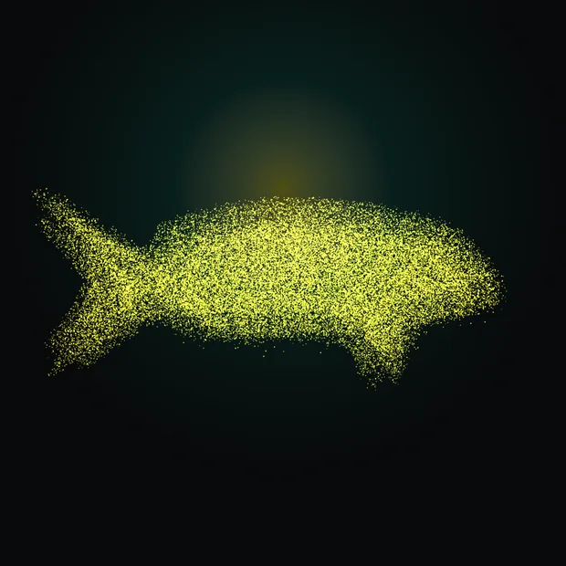
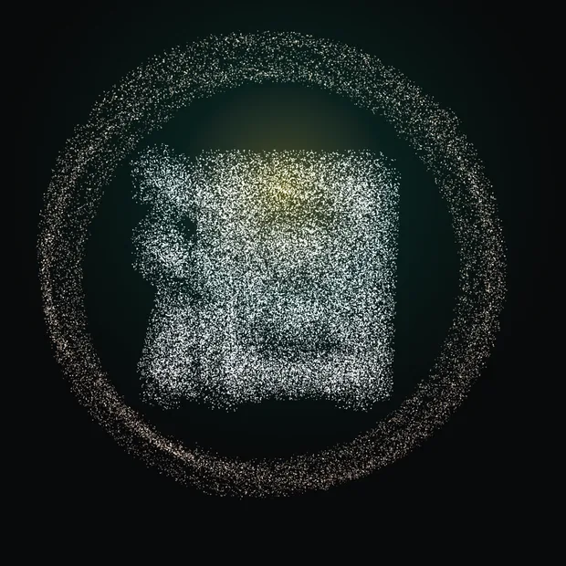
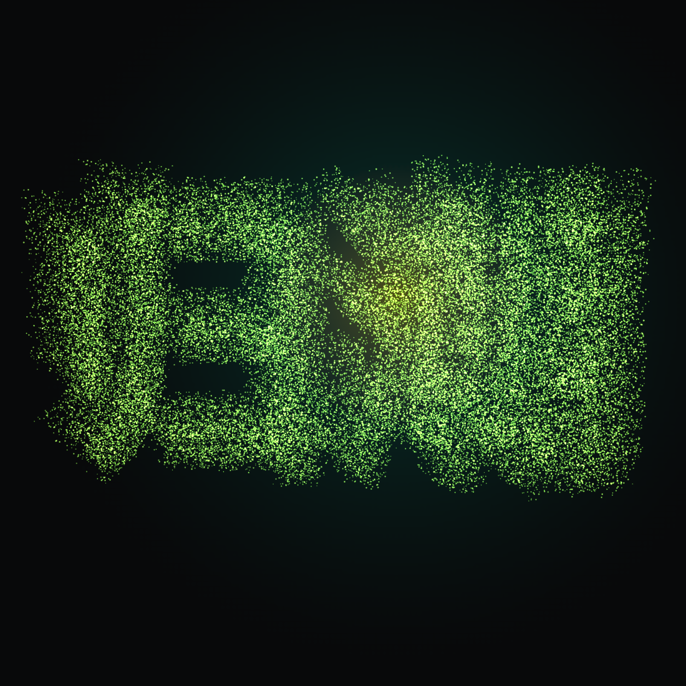
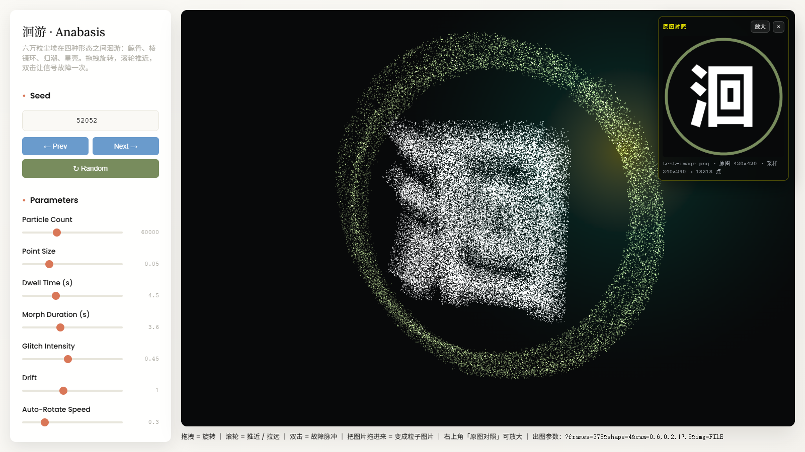

three.js · 60 000 particles · single file
六万个粒子在四种形态之间洄游——鲸骨架 / 棱镜环 / 归潮字 / 星壳， 以及第五种形态：你上传的图片。形态不是被建模出来的，是被吸引出来的； 拖拽旋转，双击触发故障带。
全部由同一套点云着色器渲染，同一颗种子（52052）可完整复现。




无视觉通道也能验收——每张静帧都用像素统计打分。
距离衰减 alpha、层深加权、gl_PointSize 随视距放大；点精灵三段辉光 + discard 圆形掩膜。
4 条水平带内 mvPosition.x += glitchXOffset * gx，双击即触发。
亮度 / 透明 / Sobel 边缘三模式识别，按亮度给深度浮雕，并按可见半高自动贴合取景框。
?frames=N 同步跑帧后停住并置 __READY__，配无头浏览器即可定格出图与动画序列。
node tools/render-3d.mjs anabasis-3d.html out.png "frames=210&shape=2&cam=0.4,0.18,17.5"
node tools/analyze-art.mjs out.png # 亮度均值 / 亮部占比 / bbox